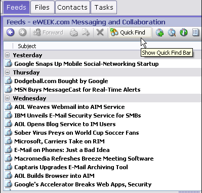
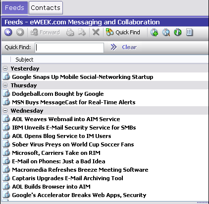

Using Quick Find
The Quick Find feature enables you to find resource items of a single type that match some keyword(s) in their content. Scope is limited to the resource type you are currently working with. For example, if you are working in the News tab, you can use Quick Find to find some text in the articles of the currently-selected newsgroup.
The Quick Find button is located on the resource toolbar.

Quick Find button on the resource toolbar
Click to expand the Quick Find bar and search for an instance of a word or phrase in the View you are currently browsing.

Quick Find locates items in the list of items you’re currently working with
Running a Quick Find Query
To run a Quick Find query:
- Make sure you are working in the tab for the type of resource you want to find: News, for example.
- Choose Search | Quick Find on the Main menu, or press Alt + D
- Enter the search keyword(s) in the Quick Find box which opens and is located on the Items List toolbar. Search Query Syntax elements are allowed.
- Press Enter, or click the run query button:
If matching items are found, the Items List shows only the found items. If no matching items are found, the list will be empty. To clear the search keyword(s) and restore the full list of resource items, click the Clear button on the Items List toolbar.